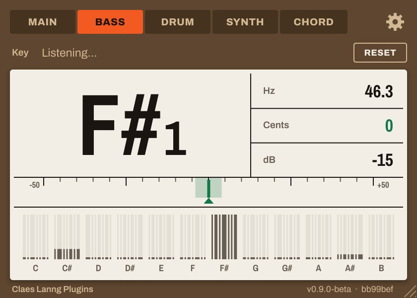

Guides / 808 note frequency chart
G1 808
An 808 on G1 is 49.00 Hz. FL Studio's piano roll calls it G2.
- Frequency
- 49.00 Hz
- In FL Studio
- G2Same note, FL names octaves one higher
- One cycle
- 20.4 ms
- MIDI note
- 31
A plain sine wave, the core of an 808. Use headphones or a subwoofer: laptop and phone speakers can't play it.
Who will hear it
The classic 808 range. Clear on a club system, a subwoofer, good headphones and most studio monitors. Phone and laptop speakers can't play it, so listeners there only hear its harmonics. Distortion or saturation on the 808 adds harmonics, which is what lets it come through on small speakers.
Close neighbors
The note below, F#1, is 46.25 Hz, and the note above, G#1, is 51.91 Hz. That's only 2.8 and 2.9 Hz away, so an 808 that's a little out of tune is easy to miss by ear down here. An octave down, G0 is 24.50 Hz. An octave up, G2 is 98.00 Hz.
Keys that use G
An 808 usually plays the root of the key, and often the fifth. These are the keys where G is in the scale, with the root and fifth first. Camelot codes are for DJ mixing and key detectors.
| Key | Camelot | G is the |
|---|---|---|
| G minor | 6A | root |
| G major | 9B | root |
| C minor | 5A | 5th |
| C major | 8B | 5th |
| F minor | 4A | 2nd |
| F major | 7B | 2nd |
| E minor | 9A | 3rd |
| Eb major | 5B | 3rd |
| D minor | 7A | 4th |
| D major | 10B | 4th |
| B minor | 10A | 6th |
| Bb major | 6B | 6th |
| A minor | 8A | 7th |
| Ab major | 4B | 7th |
Natural minor and major scales. Highlighted rows: G is the root or the fifth.
Tuning the kick to a G1 808
A kick has a pitch too: the low tone it settles on after the click. When that tone matches the 808, or sits a fifth away, the two blend instead of clashing. With an 808 on G1, that means a kick that settles on G, or on D (D2 is 73.42 Hz, D1 is 36.71 Hz).
The timing that cancels it out
One cycle of G1 lasts 20.4 ms. If a kick at the same pitch starts half a cycle, 10.2 ms, before or after the 808, the two waves push in opposite directions and the low end drops away. Line them up within a millisecond or two and they add up instead. Try it in the phase demo, or see it on your own track with Smartscope.
Is your 808 really G1?
PitchScope reads the note of an 808 down to 20 Hz, shows how many cents off it is, and turns green within 4 cents. At G1, 4 cents is only 0.11 Hz. It's free, for Windows.
